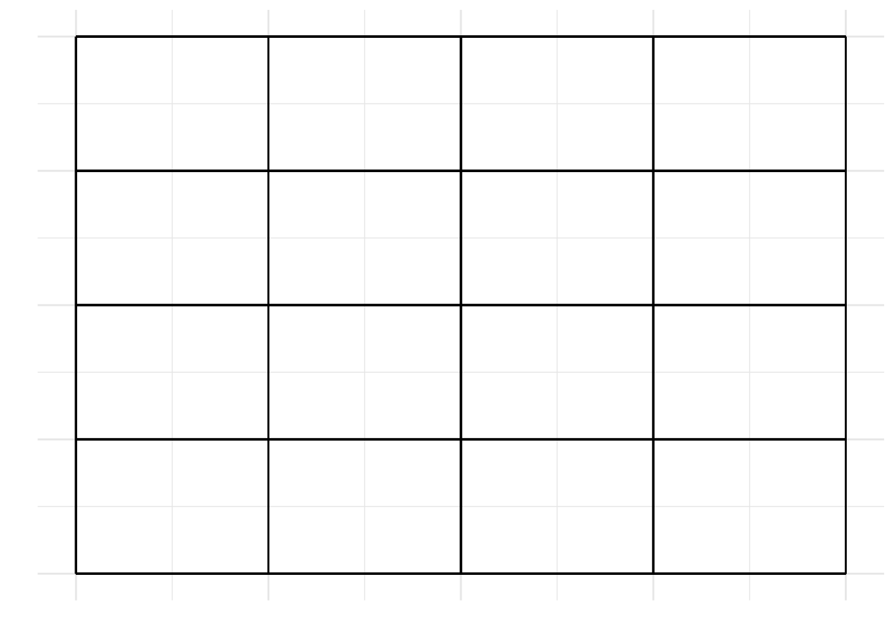

9 Matrix population modelling
Matrix population models are one of the most commonly used tools in population biology. They are extensively used in population management and conservation for both animals and plants. This practical aims to give you a good understanding of the basics of their construction and use.
Learning outcomes:
- Competence in constructing life cycle diagrams to represent the life history of real (or theoretical) organisms.
- Understanding how to parameterise life-cycle diagrams and use them to produce a matrix population model.
- Competence in using R to calculate a population growth rate and project a population.
- Understanding how to connect these results to a management question.
- Understanding the logic of “in silico experiments” to investigate a biological question (mathematical modelling).
Think of an organism you would like to model the dynamics of. It could be a mammal, a bird, a fish, insect or tree … real or fantasy.
Think about their life cycle, and draw it as a life cycle diagram with circles indicating the stages and arrows representing transitions between stages and reproduction. Next to the arrows, write values for survival probability and fecundity (number of babies) using your biological knowledge.
Things to think about:
- Is it age based or stage based?
- How many stages are there?
- If it is stage, how are stages defined? E.g. by size, by development, etc.
- Are the survival and fecundity higher in earlier or later life?
- Does the organism skip stages?
- Does the organism move backwards through the life cycle?

Turn this diagram into a matrix population model by filling in a square of survival/fecundity values. There is space below for up to a 4-stage matrix model.

Working with matrices is very tedious in Excel. However, in R you can use this information to predict the future dynamics of the population, and estimate population growth rate, and generation time etc.
Open up RStudio, and lets see if we can predict future dynamics. First you will need to install a package called popdemo.
install.packages("popdemo")You only need to install packages once. After thatyou can load the package for use by using the library function.
library(popdemo)You can put your matrix into R like in the example below (change the numbers to match YOUR model). If your model has fewer, or more, stages then you will need to modify the code a bit. Ask for help if you get stuck.
A <- matrix(c( 0.00, 0.00, 4.00, 2.00,
0.10, 0.00, 0.00, 0.00,
0.50, 0.20, 0.00, 0.00,
0.00, 0.30, 0.40, 0.30),
byrow = TRUE, nrow = 4)And now you can use the project function to project what happens to the population, then plot it. Look at what happens if you log or don’t log the y-axis. First you need to define an initial starting population structure.
In my example, I have 4 stages, so I have 4 values for the initial population sizes. Then I use the popdemo function project to do a population projection for 10 time steps.
initial <- c(10,5,3,3)
pr <- popdemo::project(A, vector = initial, time=10)Take a look at pr, the projected population. This gives you the total population size, and below that the population sizes in each stage.
pr## 1 deterministic population projection over 10 time intervals.
##
## [1] 21.0000 28.6000 45.9800 68.7940 110.7142 167.8147 267.2773
## [8] 408.6193 646.1858 993.7152 1563.8309You can access the population sizes of the different stages using vec(pr).
vec(pr)## S1 S2 S3 S4
## [1,] 10.0000 5.00000 3.00000 3.00000
## [2,] 18.0000 1.00000 6.00000 3.60000
## [3,] 31.2000 1.80000 9.20000 3.78000
## [4,] 44.3600 3.12000 15.96000 5.35400
## [5,] 74.5480 4.43600 22.80400 8.92620
## [6,] 109.0684 7.45480 38.16120 13.13026
## [7,] 178.9053 10.90684 56.02516 21.44000
## [8,] 266.9806 17.89053 91.63403 32.11412
## [9,] 430.7643 26.69806 137.06842 51.65501
## [10,] 651.5837 43.07643 220.72178 78.33329
## [11,] 1039.5537 65.15837 334.40714 124.71163Let’s plot this…
pop <- vec(pr)
matplot(pop,type="l",log="y")
legend("topleft",legend = colnames(pop),col=1:ncol(pop),lty=1:ncol(pop))
You should see that the population increases exponentially. The population growth rate is the so-called “dominant eigenvalue” of the matrix A.
We can ask R for the eigen values and eigen vectors. These are the population growth rate (\(\lambda\)) and the stable stage distribution (SSD) and the reproductive values (RV) of the different stages. SSD is the expected proportion of individuals in the different stage classes at equilibrium and RV is the expected number of future offspring by individuals in each stage.
You can see that in this case, using my example values the population is growing 55.74% per year.
eigs(A)## $lambda
## [1] 1.557365
##
## $ss
## [1] 0.66068003 0.04242295 0.21756281 0.07933420
##
## $rv
## [1] 0.6831674 0.4705100 2.0337794 1.08666569.1 Your turn…
- by editing the inputs in the code above, make a projection for your data.
- plot the results (using the R code here)
- what is the health of your population?
9.2 An evolutionary experiment
You can think of lambda (population growth rate) as being a measure of fitness. Imagine that some of your population had a mutation that caused them to have, say, 1 extra baby, but at the expense of reduced survival in one of the younger stages. Would this mutation persist in the population?